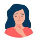

التهاب حاد تار های صوتی هست که معمولا بین سن ۱۸ تا ۴۰ سال به دنبال URI ممکنه رخ بده.
اگر زیر ۳ هفته باشه حاد و اگر بالای ۳ هفته باشه مزمن هست که باید بررسی بیشتری صورت بگیره
درمان :
بیماری خود محدود شونده ست و معمولا ظرف ۳ تا ۷ روز بهبود پیدا میکنه.
توصیه های درمانی که می تونید پیشنهاد بدید :
🔸 استفاده از بخور و هوای مرطوب
🔸 Complete voice rest یعنی سعی کنه اصلا صحبت نکنه یا اگر مجبور هست با تون پایین صحبت کنه که تار های صوتی استراحت داشته باشن
🔸 قطع مصرف سیگار و مواجهه به گاز های شیمیایی
🔸 پرهیز از مصرف قهوه ، شکلات و غذای چرب و ادویه جات و توصیه به مصرف مایعات ولرم زیاد
🔸 درمان دارویی کمک کننده : PPI برای رفع رفلاکس ، مسکن ، موکولیتیک
Rx :
1. Tab Pantoprazol 40 mg daily
2. Tab Acetaminophen or Ibuprofen bd
3. Syrup Guaifenesin or Eff NAC
نکته : استفاده از آنتی بیوتیک و کورتون در موارد خفیف و معمول توصیه نمی شود
نکته : استفاده از آنتی هیستامین ها توصیه نشده است.
در کنار علائم URI مثل تب و سرفه و رینیت می تواند :
✳️خشونت صدا
✳️سختی یا درد در هنگام صحبت
✳️سرفه خشک
✳️خشکی گلو و گلو درد
1️⃣ URI
2️⃣ اپیگلوتیت
3️⃣ لارنژیت مزمن آلرژیک یا عفونی
Reflux laryngitis 4️⃣
Spasmodic Dysphonia 5️⃣
6️⃣ ندول یا پولیپ تار صوتی
7️⃣ نئوپلاسم